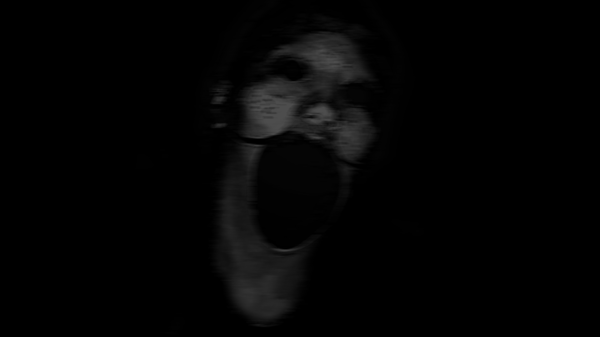
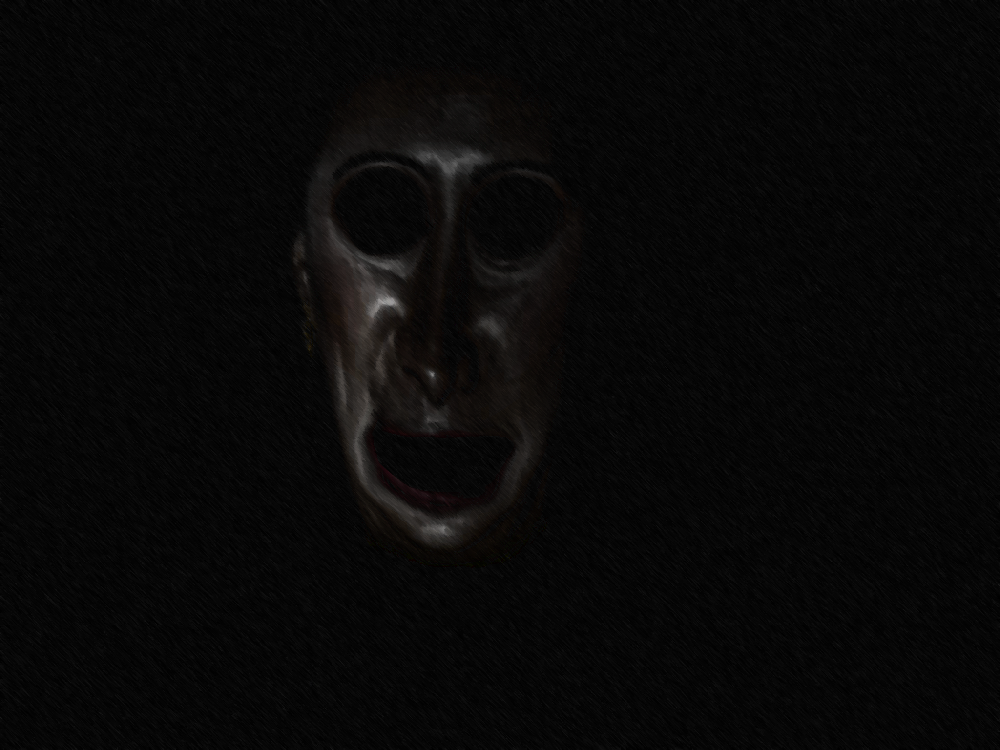
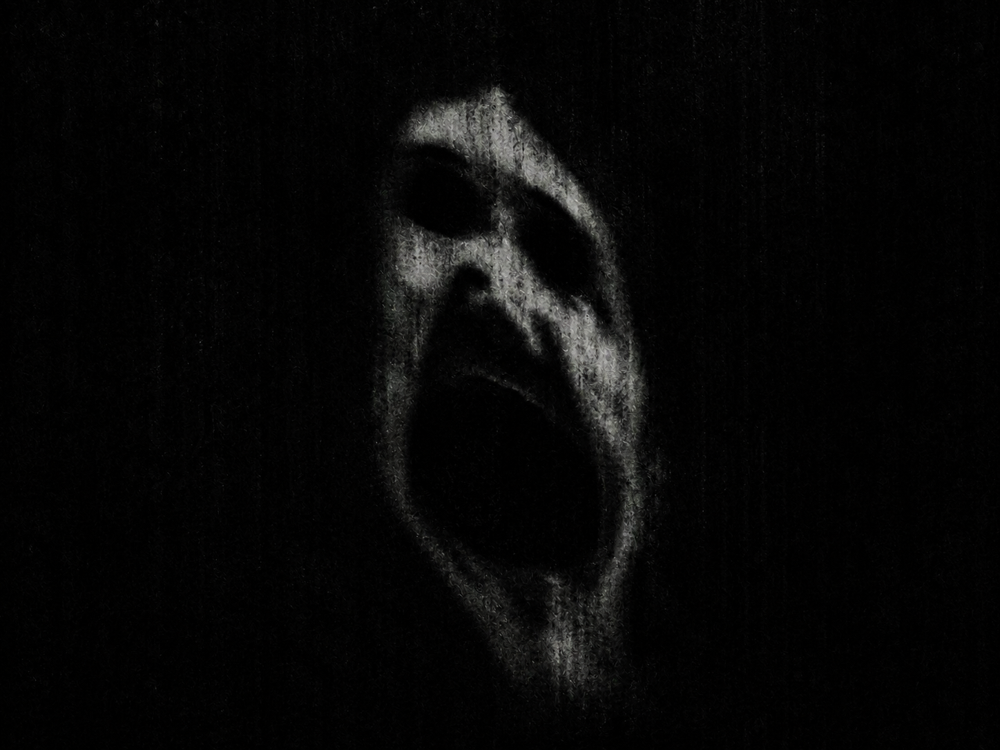
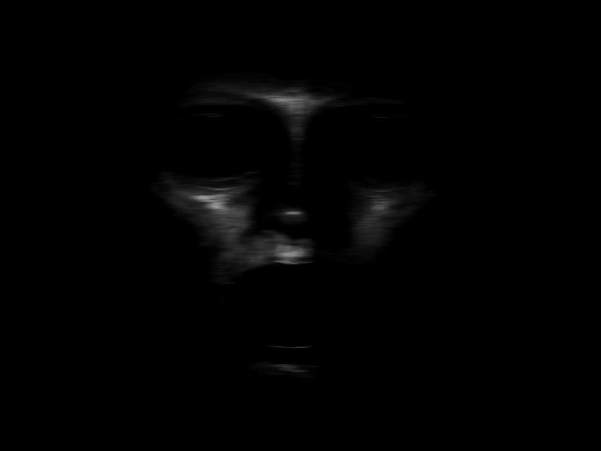

Various entities around the world, catalogued and studied by our research team.
Care has been taken to prevent any harm caused by these entities by viewing these photographs.
Entity names redacted for safety reasons.
By viewing this page, you acknowledge that you have read and understood the warnings and guidelines provided.
The International Committee on Investigations of Anomalous Entities is not responsible for any harm or consequences resulting from viewing these photographs.

Catalogued in the Philippines. This entity was photographed in Brgy. ████████, Caloocan City. No further information available.

Catalogued in the Philippines. This entity was photographed within a remote forest during a ritual conducted by the ████████ people. Local accounts describe the entity as a harbinger of prosperous harvests, though prolonged exposure to the footage reportedly caused recurring nightmares among outside observers.

Catalogued in France, 1978. This photograph depicts a painting created by a local priest following renovation work at the Church of ████████████. Shortly after excavation of the graveyard behind the church, workers began falling ill and reporting recurring visions of distorted faces. This was the face most commonly described by those involved in the incident.

Catalogued in the Pacific Ocean near the Mariana Trench by the Pacific Oceanographic Institute. During a deep-sea survey, operators observed a humanoid face on the live feed of a remote-controlled submarine near the trench floor. Seconds after the sighting, all communication with the vessel ceased until it was forcibly recovered.